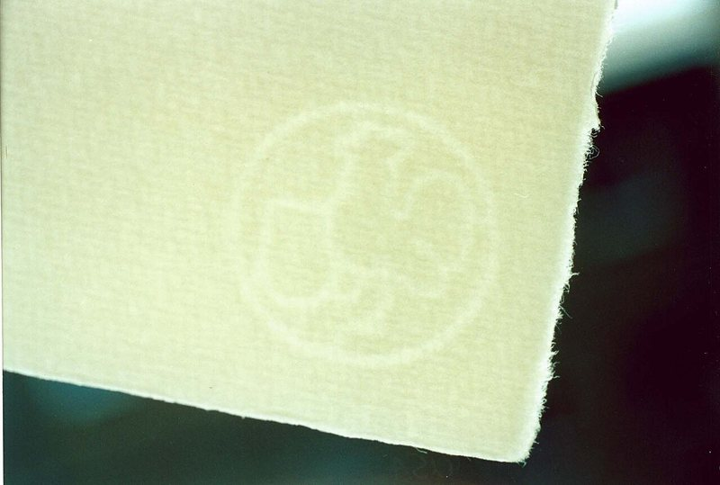
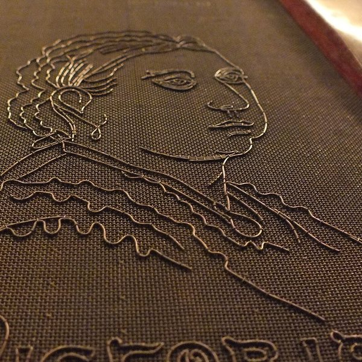

Good morning!
Nur das Schöne wird die Welt retten!
Fjodor Dostojewski
Nicht verzagen, Doc Alvers fragen!
Informatik — Künstliche Intelligenz
Wie Claude, Gemini & Co. ihre Texte markieren — und wie man es nachweist
Nicht verzagen, Doc Alvers fragen!
Ab 3. November 2026 markiert Anthropic auch ältere Claude-Modelle
Neuere Modelle wie Claude Opus 5.5 tragen das Zeichen schon heute
Das Zeichen ist ein unmerkliches Muster in der Wortwahl
Kein Zeichen, kein Token mehr — Bedeutung und Qualität bleiben gleich
Es verrät nichts über Nutzer oder Gespräch, nur: „von einer KI“
Nicht verzagen, Doc Alvers fragen!
Kapitel 01
Ein Zeichen, das man nicht sieht

Nicht verzagen, Doc Alvers fragen!
Im Geldschein: gegen das Licht gehalten, erscheint ein Bild
Auf Fotos: ein halbdurchsichtiges Logo über dem Bild
Gemeinsam: unauffällig für alle, eindeutig für den Prüfer
Ein KI-Text hat kein Papier und kein Bild — nur Wörter
Wie versteckt man ein Zeichen in Wörtern, ohne den Text zu verderben?
Nicht verzagen, Doc Alvers fragen!
Beim Schöpfen liegt ein Drahtbild auf dem Sieb
Dort bleibt weniger Papierbrei hängen — das Papier wird dünner
Gegen das Licht scheint die dünne Stelle heller
Das Zeichen ist Teil des Papiers, nicht aufgedruckt
Beim KI-Text genauso: das Zeichen entsteht beim Schreiben, nicht danach

Nicht verzagen, Doc Alvers fragen!
Es sagt immer nur das nächste Wort voraus (genauer: das nächste Token)
Dazu liefert es für jedes mögliche Wort eine Wahrscheinlichkeit
Dann wird gewürfelt — deshalb gibt es auf dieselbe Frage andere Antworten
Oft passen mehrere Wörter fast gleich gut
Genau dieser Spielraum ist der Platz für das Wasserzeichen
Nicht verzagen, Doc Alvers fragen!
Eingaben
Ausgabe
Ziel
Fehler
Durchlauf
vorwärts: rechnen
rückwärts: Backpropagation
Geübt an sechs Summen: Am Ende sind beide Gewichte 1 — das Netz kann jetzt addieren, nicht nur 5 + 2.
Nicht verzagen, Doc Alvers fragen!
Nicht verzagen, Doc Alvers fragen!
„Heute ist das Wetter …“ — welches Wort kommt als Nächstes?
schön
sonnig
herrlich
warm
gut
mild
alle anderen
Mehrere Wörter passen fast gleich gut — in diesem Spielraum versteckt sich das Wasserzeichen.
Nicht verzagen, Doc Alvers fragen!
Ein geheimer Schlüssel und das vorige Wort ergeben eine Zufallszahl
Sie teilt den ganzen Wortschatz in zwei Hälften: grün und rot
Beim Würfeln bekommen grüne Wörter einen Bonus
Unter den passenden Wörtern ist fast immer ein grünes — der Text bleibt gut
Nach jedem Wort wird neu geteilt — ohne Schlüssel sieht das aus wie Zufall
Nicht verzagen, Doc Alvers fragen!
vorheriges Wort
ist
geheimer Schlüssel
Zufallsgenerator
aus Wort + Schlüssel
grüne Liste
sonnig · herrlich · mild · …
eine Hälfte aller Wörter
rote Liste
schön · warm · gut · …
die andere Hälfte
Für jedes neue Wort wird neu geteilt. Ohne Schlüssel sieht die Teilung aus wie reiner Zufall.
Nicht verzagen, Doc Alvers fragen!
ohne Wasserzeichen
schön
sonnig
herrlich
warm
gut
mild
mit Wasserzeichen: Grün bekommt einen Bonus
schön
sonnig
herrlich
warm
gut
mild
Die Rangfolge kippt: Rote Wörter werden selten, grüne häufig — und jedes davon passt in den Satz.
Nicht verzagen, Doc Alvers fragen!
Ein Mensch schreibt:
Am
Wochenende
fahren
wir
mit
dem
Fahrrad
an
den
See.
5 von 10 Wörtern grün — wie beim Münzwurf
Die KI mit Wasserzeichen schreibt:
Bei
sonnigem
Wetter
lohnt
sich
ein
Ausflug
zum
nahen
Badesee.
9 von 10 Wörtern grün — auffällig viele
Beide Sätze lesen sich ganz normal. Die Farben sieht nur, wer den Schlüssel hat.
Nicht verzagen, Doc Alvers fragen!
Kapitel 02
Grüne Wörter zählen
Nicht verzagen, Doc Alvers fragen!
Der Prüfer hat den Schlüssel und färbt jedes Wort nach: grün oder rot
Text von einem Menschen: ungefähr die Hälfte grün — wie beim Münzwurf
KI-Text mit Wasserzeichen: deutlich mehr als die Hälfte
Aber auch ein Mensch kann zufällig viele grüne Wörter erwischen
Die Frage ist also: Wie unwahrscheinlich ist das Ergebnis? → Statistik
Nicht verzagen, Doc Alvers fragen!
Schwelle z = 4
KI-Text mit Wasserzeichen
150 grüne → z ≈ 7,1
Texte von Menschen: um 100 grüne
86 bis 114
Anzahl grüner Wörter in einem Text mit 200 Wörtern
Nicht verzagen, Doc Alvers fragen!
Wörter, ohne Zeichen ist jedes mit grün — gezählt:
Erwartet: grüne, Streuung
Ab heißt es Wasserzeichen — Zufall nur in 1 von 31 600 Fällen
Bei : Zufall in 1 von 1,3 Billionen Fällen
Nicht verzagen, Doc Alvers fragen!
| Wörter | davon grün (75 %) | z-Wert | so oft wäre es Zufall |
|---|---|---|---|
| 20 | 15 | 2,2 | 1 von 80 |
| 40 | 30 | 3,2 | 1 von 1 300 |
| 100 | 75 | 5,0 | 1 von 3,5 Millionen |
| 200 | 150 | 7,1 | 1 von 1,3 Billionen |
| 400 | 300 | 10,0 | 1 von |
Ein Satz oder eine kurze Antwort ist nicht sicher prüfbar
Ab etwa 100 Wörtern wird es eindeutig — der z-Wert wächst mit
Nicht verzagen, Doc Alvers fragen!
Kapitel 03
Claude, Gemini und das Gesetz
Nicht verzagen, Doc Alvers fragen!
Verfahren nach dem Vorbild von SynthID-Text (Google DeepMind, 2024)
Eingebaut im Modell — gilt in jeder App und auf jeder Cloud
Das Zeichen reist mit: Kopieren und Einfügen ändert nichts
Bilder und Dateien bekommen stattdessen signierte Herkunftsdaten (C2PA)
Das genaue Verfahren ist geheim — ein Prüfwerkzeug gibt es erst im Test
Nicht verzagen, Doc Alvers fragen!
sonnig
schön
herrlich
warm
sonnig
warm
sonnig
4 Vorschläge des Modells
Runde 1 gewonnen
Runde 2: Sieger
kommt in den Text
Die Zahl am Rand ist ein Geheimtest g aus Schlüssel und Kontext: wer eine 1 hat, gewinnt (Gleichstand: Münzwurf). Im fertigen Text stecken darum auffällig viele Wörter mit g = 1.
Nicht verzagen, Doc Alvers fragen!
Umschreiben — von Hand oder von einer anderen KI
Übersetzen in eine andere Sprache
Kurze Texte: zu wenige Wörter zum Zählen
Feste Antworten ohne Spielraum: „Die Hauptstadt Frankreichs ist Paris.“
Bei älteren Claude-Modellen: geänderte Würfel-Einstellungen (temperature, top_p, top_k)
Nicht verzagen, Doc Alvers fragen!
Wasserzeichen
beim Schreiben absichtlich gesetzt
geprüft mit dem Schlüssel
Ergebnis mit berechneter Wahrscheinlichkeit
prüfen kann nur, wer den Schlüssel hat
KI-Detektor
rät nachträglich aus dem Stil
kein Schlüssel — nur eine Vermutung
viele Fehlalarme
trifft besonders oft Nicht-Muttersprachler
Nicht verzagen, Doc Alvers fragen!
Artikel 50: KI-Inhalte müssen maschinenlesbar gekennzeichnet sein
Stichtag 2. August 2026: alle seither erschienenen Claude-Modelle sind markiert
Ältere Modelle folgen bis zur Frist am 2. Dezember 2026
Ziel: Desinformation und Deepfakes erkennbar machen
Das Zeichen sagt nur „von einer KI“ — nicht, wer gefragt hat
Nicht verzagen, Doc Alvers fragen!
Kapitel 04
DeepSeek, Claude oder ChatGPT — geht das überhaupt?
Nicht verzagen, Doc Alvers fragen!
| Anbieter | Verfahren | seit | wer kann prüfen? |
|---|---|---|---|
| Anthropic (Claude) | Wortwahl-Muster nach SynthID-Text | Aug. 2026, ältere ab 3. Nov. | Anthropic, Test-API für wenige |
| OpenAI (ChatGPT) | „textGrain“, Wortwahl-Muster | Okt. 2026, nur in der EU | nur zugelassene Forschende |
| Google (Gemini) | SynthID-Text | 2024 | Verfahren offen (Open Source) |
| DeepSeek | Kennzeichnungspflicht in China | Sept. 2025 | Verfahren nicht öffentlich |
Jeder Anbieter hat seinen eigenen Schlüssel — prüfen kann er nur seine eigenen Texte
Ein gemeinsames Prüfwerkzeug für alle gibt es nicht
Nicht verzagen, Doc Alvers fragen!
Gedankenexperiment: alle drei Anbieter prüfen den Text mit ihrem Schlüssel
Je Anbieter ein Faktor: Wie viel besser passt die Zählung zu „markiert“ als zu „Zufall“?
„Keiner der drei“ (ein Mensch oder ein anderes Modell) bekommt den Faktor
Prozent = eigener Faktor ÷ Summe aller Faktoren — der Satz von Bayes
Annahme: vorher sind alle vier gleich wahrscheinlich
Nicht verzagen, Doc Alvers fragen!
Mit dem Anthropic-Schlüssel gelesen: 148 von 200 Wörtern grün, 52 rot
Soziale Medien prägen heute den Alltag vieler Jugendlicher. Schon morgens greifen viele zuerst zum Smartphone, um Nachrichten zu lesen und neue Beiträge zu entdecken. Plattformen wie Instagram, TikTok oder WhatsApp verbinden Freunde, auch wenn sie weit voneinander entfernt wohnen. Das hat klare Vorteile: Man bleibt in Kontakt, teilt Erlebnisse und findet schnell Gleichgesinnte. Gleichzeitig entstehen jedoch auch Probleme. Viele Nutzer verbringen täglich mehrere Stunden online und merken kaum, wie rasch die Zeit vergeht. Ständige Benachrichtigungen stören die Konzentration beim Lernen. Außerdem zeigen die Bilder im Netz meist nur die schönsten Momente. Wer sich dauernd mit makellosen Körpern und Traumurlauben vergleicht, fühlt sich schnell unzufrieden. Hinzu kommt die Frage, was mit den eigenen Daten geschieht. Jeder Klick wird gespeichert und ausgewertet, damit Werbung gezielter passt. Deshalb ist ein bewusster Umgang besonders wichtig. Jugendliche sollten feste Zeiten ohne Handy einplanen und Benachrichtigungen gezielt abschalten. Eltern und Schulen können dabei helfen, indem sie offen über Chancen und Risiken sprechen. Entscheidend ist, dass man die Plattformen nutzt, statt von ihnen genutzt zu werden. Wer kritisch bleibt und regelmäßig Pausen einlegt, kann die Vorteile genießen, ohne die Nachteile zu unterschätzen. Soziale Medien sind weder gut noch schlecht: Es kommt darauf an, wie wir sie verwenden.
Rot sind vor allem kleine Wörter ohne Spielraum („die“, „und“, „zu“: 44 der 52 roten). Färbung zur Veranschaulichung.
Nicht verzagen, Doc Alvers fragen!
Ein Aufsatz mit 200 Wörtern, so abgegeben, wie die KI ihn schrieb
jeder zählt mit seinem eigenen Schlüssel
Anthropic
148 von 200 grün
z = 6,8
OpenAI
103 von 200 grün
z = 0,4
DeepSeek
96 von 200 grün
z = −0,6
Wer war's?
Anthropic
OpenAI
DeepSeek
keiner der drei
Klar: Claude von Anthropic.
Annahme: vorher alle vier gleich wahrscheinlich, markierter Text 75 % grün. Zählungen ausgedacht, Rechnung echt.
Nicht verzagen, Doc Alvers fragen!
Ein Absatz mit 80 Wörtern
jeder zählt mit seinem eigenen Schlüssel
Anthropic
42 von 80 grün
z = 0,4
OpenAI
47 von 80 grün
z = 1,6
DeepSeek
53 von 80 grün
z = 2,9
Wer war's?
Anthropic
OpenAI
DeepSeek
keiner der drei
Ziemlich sicher DeepSeek — aber nicht ganz.
Annahme: vorher alle vier gleich wahrscheinlich, markierter Text 75 % grün. Zählungen ausgedacht, Rechnung echt.
Nicht verzagen, Doc Alvers fragen!
Eine Nachricht mit 40 Wörtern
jeder zählt mit seinem eigenen Schlüssel
Anthropic
26 von 40 grün
z = 1,9
OpenAI
25 von 40 grün
z = 1,6
DeepSeek
20 von 40 grün
z = 0,0
Wer war's?
Anthropic
OpenAI
DeepSeek
keiner der drei
Nur eine Tendenz — kein Beweis.
Annahme: vorher alle vier gleich wahrscheinlich, markierter Text 75 % grün. Zählungen ausgedacht, Rechnung echt.
Nicht verzagen, Doc Alvers fragen!
Im Prinzip ja: jeder Schlüssel liefert eine Zählung, Bayes macht daraus Prozente
Heute nein: die Schlüssel bleiben bei den Anbietern, es gibt kein gemeinsames Prüfwerkzeug
Lange, unveränderte Texte: eindeutig — kurze oder umgeschriebene: nur eine Tendenz
25 % der Wörter durch Synonyme ersetzt: OpenAI erkennt nur noch 17 % der Texte
Ganz ohne Wasserzeichen verrät der Stil das Modell: 97 % Treffer bei fünf Modellen
Nicht verzagen, Doc Alvers fragen!
Ist es fair, dass nur der Anbieter prüfen kann?
Sollte eine Schule KI-Texte prüfen dürfen?
Wer einen KI-Text umschreibt: wessen Text ist das dann?
Warum ist offen angeben besser als verstecken?
Brauchen bald auch Menschen-Texte ein Echtheitszeichen?
Nicht verzagen, Doc Alvers fragen!
Anthropic: Mail „Text watermarking begins November 3, 2026“ (28.10.2026) und Hilfeseite „How Claude marks AI-generated content“
J. Kirchenbauer u. a.: A Watermark for Large Language Models, ICML 2023 (arXiv 2301.10226)
S. Dathathri u. a.: Scalable watermarking for identifying large language model outputs, Nature 634, 2024
W. Liang u. a.: GPT detectors are biased against non-native English writers, Patterns 4, 2023
M. Sun u. a.: Idiosyncrasies in Large Language Models, ICML 2025 (arXiv 2502.12150)
Nicht verzagen, Doc Alvers fragen!
OpenAI: Ankündigung „textGrain“ für ChatGPT und Codex in der EU, 5.10.2026 (nach Presseberichten)
China: Maßnahmen zur Kennzeichnung KI-erzeugter Inhalte und Norm GB 45438-2025, gültig seit 1.9.2025
Verordnung (EU) 2024/1689 (AI Act), Artikel 50
Fotos: Wikimedia Commons — 50-Euro-Schein (gemeinfrei), Schöpfsieb (Yamaplos, CC BY-SA 4.0), Büttenpapier (Hahnemühle PR, CC BY-SA 3.0)
Nicht verzagen, Doc Alvers fragen!
Ein Wasserzeichen im KI-Text ist keine Markierung, sondern Statistik: Die KI wählt ein bisschen zu oft die „grünen“ Wörter — und nur wer den Schlüssel hat, kann nachzählen.
Merksatz
Nicht verzagen, Doc Alvers fragen!